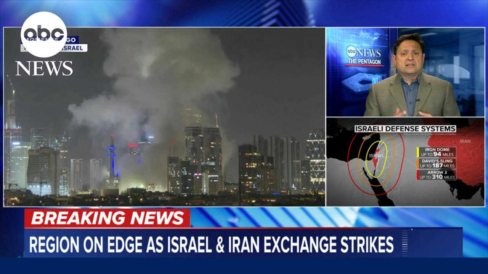

【美国协助击落飞向以色列的导弹】
Summary: The US is helping Israel intercept Iranian missiles using military assets like Navy destroyers and THAAD systems, though the exact systems and number of missiles downed remain unclear.
摘要： 美国正协助以色列拦截伊朗导弹，动用了海军驱逐舰和萨德系统等军事资产，但具体使用哪些系统及击落导弹数量尚不明确。

⏱️ Estimated Reading Time: 3 min
📚 六级生词 📚 托福生词 📚 专八生词 📚 SAT生词 📚 考研生词 📚 GRE生词 📚 高考生词
How is the US assisting Israel at this moment?
美国此刻如何协助以色列？
Morgan, we've just learned that US official, according to US officials, US military assets have been used to help bring down some of the Iranian missiles that were targeting Israel from Iran.
摩根，我们刚刚从美国官员处获悉，美国军事资产已被用于协助击落一些从伊朗射向以色列的导弹。
Now, we're trying to figure out exactly what kinds of systems may may have been used u because they're kind of very specific systems that are in place.
目前，我们正试图弄清具体使用了哪些系统，因为这些系统非常特殊且已部署到位。
For example, we know that earlier today, two US Navy destroyers were moved to the Eastern Mediterranean by US or European Command as a precautionary move.
例如，我们知道今天早些时候，美国或欧洲司令部作为预防措施，将两艘海军驱逐舰调往东地中海。
We also know that there are two THAAD missile defense systems inside of Israel that the US has prepositioned over the last year.
我们还知道，美国过去一年在以色列预先部署了两套萨德导弹防御系统。
Those systems can uh intercept uh high alitude ballistic missiles and pro provide an extra layer of defense to what Israel already has.
这些系统可拦截高空弹道导弹，并为以色列现有防御提供额外保护。
Everybody knows about the Iron Dome system, but the Iron Dome really is more to to help defend against low range uh short range rocket systems and drones, but there's two other systems called the Arrow and David Sling that can help intercept mid-range and long range ballistic missiles.
众所周知“铁穹”系统，但它主要用于防御短程火箭系统和无人机，而“箭”和“大卫弹弓”系统可拦截中远程弹道导弹。
So, the United States providing some kind of a military assistance in terms of helping to shoot down these Iranian ballistic missiles.
因此，美国正提供某种军事援助以协助击落这些伊朗弹道导弹。
It's unclear exactly uh how many may have been brought down.
目前尚不清楚具体击落了多少导弹。
Um but at least we now know that the US military is involved.
但至少我们现在知道美军参与了行动。
And of course, Morgan, that has been one of the main concerns here is what kind of a level of US military participation may be involved.
当然，摩根，主要担忧之一是美国军事参与的规模。
We knew that the Israelis anticipated a highlevel Iranian uh response probably in the form of ballistic missiles aimed towards their cities um and and military bases.
我们知道以色列预计伊朗会以弹道导弹袭击其城市和军事基地作为高规格回应。
Um but the big concern is about US military personnel in the region.
但更令人担忧的是该地区的美军人员。
There are 40,000 US military personnel in the Middle East and the concern was will the Iranians also include attacks against US bases in the region as part of any retaliation.
中东有4万名美军人员，担忧伊朗是否会将袭击该地区美军基地作为报复的一部分。
So far we don't have any information like that but what we do know now is that at least some US military assets have been used to bring down some of these Iranian missiles.
目前尚无此类信息，但我们已知至少部分美军资产被用于击落一些伊朗导弹。